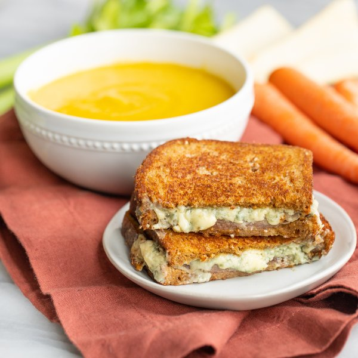

Parsnip-Apple Soup with Grilled Prosciutto & Blue Cheese Sandwich

Total Time
35 min
Nutrition (per serving)
697.2 kcalCalories
36.3 gProtein
62.3 gCarbs
36.4 gFat
Full nutrition table
| Calories | 697.2 kcal |
| Total fat | 36.4 g |
| Saturated fat | 20.7 g |
| Trans fat | 1 g |
| Cholesterol | 93.2 mg |
| Sodium | 970.2 mg |
| Carbohydrates | 62.3 g |
| Fiber | 10.2 g |
| Sugars | 19.2 g |
| Protein | 36.3 g |
| Potassium | 1107 mg |
| Calcium | 471.3 mg |
| Iron | 3.8 mg |
| Vitamin A | 579.4 IU |
| Vitamin C | 17.4 mg |
| Vitamin D | 20.5 IU |
Cookware
Ingredients
- 2 mediumcarrots
- 2 stickscelery
- 48 fl ozchicken or vegetable broth
- 2 (4 oz) pkgscrumbled blue cheese
- 2 clovesgarlic
- 2Granny Smith apples
- 2 mediumparsnips
- 8 slicesprosciutto
- 8 sliceswhole grain bread
- 1 mediumyellow onion
- black pepper
- butter, unsalted
- salt
- thyme, dried
Steps
- Wash and dry the fresh produce.2 medium parsnips
2 medium carrots
2 Granny Smith apples
2 sticks celery - Peel, trim, and small dice parsnips and carrots; place both in a medium bowl.
- Quarter, core, and small dice apples; trim and small dice celery. Add both to the bowl with the parsnip and carrot.
- Preheat a large pot over medium heat.
- While the pot heats up, peel, halve, and small dice onion; peel and mince garlic. Add both to the bowl with the other veggies.1 medium yellow onion
2 cloves garlic - Once the pot is hot, add butter and swirl to coat the bottom; add veggies and spices. Cook, stirring occasionally, until veggies are fork-tender, 5-6 minutes.4 tsp butter, unsalted
1 tsp thyme, dried
1 tsp salt
½ tsp black pepper - When the veggies are done, add broth and bring the soup to a boil over high heat. Once boiling, reduce heat to medium and simmer, stirring occasionally, until veggies are very soft, about 10 minutes.48 fl oz (6 cups) chicken or vegetable broth
- Meanwhile, place the bread slices on a flat surface. Layer blue cheese and prosciutto over half of the slices, then cover the sandwiches with the remaining bread slices.8 slices whole grain bread
2 (4 oz) pkgs crumbled blue cheese
8 slices prosciutto - Preheat a large skillet over medium heat.
- Once the skillet is hot, add butter and swirl to coat the bottom. Place sandwiches in the skillet and cook until the bottoms are golden brown, 2-4 minutes.4 tsp butter, unsalted
- Remove the sandwiches to a plate and add more butter to the skillet; return sandwiches to the skillet, browned-side up, and cook until golden brown on the other side and the cheese is melted, 2-4 minutes more. Once done, transfer to a cutting board and slice in half.4 tsp butter, unsalted
- When the soup is done, use a hand blender to purée the soup until smooth. Alternatively, use a potato masher to crush the veggies (the soup will be chunkier).
- Divide soup between bowls and serve with sandwiches on the side. Enjoy!